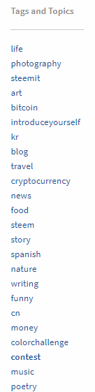

第1章 新手第一步
1.1 浏览 steemit 网站 3
小雅在朋友的介绍下来到了Steemit。
steemit是什么？其实小雅也没搞明白，朋友对她说了很多，什么区块链，什么去中心化，什么未来趋势等等，但是小雅一句都听不明白。唯一让小雅记上心头的就是在Steemit写文章可以赚钱。写文章可以赚钱？那自然是好事。于是小雅就在朋友的介绍下登陆了steemit。
steemit给小雅的第一印象是一个乱糟糟的博客，而且还是全英文的。虽然小雅英文水平还算可以，但是如果有中文支持她会更开心。小雅随便看了看首页的文章，发现大多都是全英文的文章，偶尔才有一两篇中文的文章出现。
难道在这里的都是外国人？在这里写文章要用全英文吗？抱着一大堆的问号，小雅点击了注册新账号按钮。
相信第一次来到steemit的你也会和小雅一样迷惑，让小雅陪着你一起浏览steemit的网站吧！
1.1.1 探索Steemit
终于拿到了Steemit 帐号，可是却不知从何开始浏览Steemit.com？在这个帖子里,我们会教你看一些标签和帖子（见下图），让你可以迅速找到你有兴趣的话题。那么，我们就从Steemit 网上左上方的5个标题开始介绍起：
首页 (Steemit 按钮) - 在这里你可以看到你所追随博主的帖子。
流行帖子(Trending) - 在这个标签以下的帖子均为流行帖子，非常鼓励去看看！原因在此。
最新帖子(New) - 在这个标签以下的帖子均为当下刚出炉的帖子。
热门帖子(Hot) - 在这个标签以下的帖子均为当下火红并得到一定的点击量的帖子。
被推广的帖子(Promoted) - 在这个标签以下的帖子都是一些用户自己花费推广的帖子，以便获得更多的阅读量和点击量。
如果你想要查找特定标签的最热门和趋势帖子，你可以到Steemit 网页左边那里点击你想要的标签。(见下图)

1.1.2 预览帖子
在每一个标签或主题里每个小时都有成千上万的帖子，该如何去筛选出心仪的帖子呢？很简单，你只需要大约看过每一个帖子的预览就能筛选出来。但是每一个预览中都有很多看不懂的意思？别着急，你可以根据以下图片来知道每一个字体或数字的意思。
1.1.3 Steemit 上如何阅读帖子
当你点击进入你想看的帖子时，全文窗口就会弹出来。如此一来，你就可以阅读全文。阅读完后，如果你想打赏那位作者，你就点击 “赞”，而如果你想与作者互动，可以在文章下方点击“reply” 留言。（见下图）
看完后相信你已经对steemit的网站有了初步的了解，接下来，赶紧注册一个账号加入steem的大家庭吧！
1.2 注册 steem 账号 4
小雅有点烦躁，因为她在注册Steemit账号时遇到了难题。
这是她见过的注册账号最不友好的社区。她从来没有想过注册一个账号会是那么麻烦的一件事情，她甚至萌生了永远不登陆这个网站的想法。
首先这个网站的浏览速度超级慢，至少在中国访问的速度是超级慢，她感觉回到了拨号上网的时代。其次，注册个账号居然需要翻墙来收取验证码。天啊，她一个小女生哪里懂得翻墙这些高科技的事情啊。
好不容易在朋友的帮助下翻了墙，又专门去注册了一个Gmail的邮箱用来收取验证码，按照步骤一步步的完成注册。忙完这些，她发现刚注册的账号居然还不是马上生效，还要等待官方把你的账号激活，这个过程一般是1-7天左右。
小雅很是抓狂，终于在第三天的早上，她收到了官方发来的邮件，她的账号正式开通了。
虽然历经波折，但是小雅的Steemit之旅正式开始。
如同小雅的经历一般，确实注册一个steemit账号对于新人来说有些困难，让我们跟着教程一步步来注册一个新账号吧！
- 1.首先登陆steemit.com，点击注册按钮
1-2-1.jpg
- 2.输入你要注册的用户名，只能是英文小写字母
- 3.输入你的邮箱地址，建议使用gmail邮箱，有部分邮箱可能会收不到验证码。
- 4.官方会发送一份验证邮件到你的邮箱，登陆邮箱查收邮件，点击邮箱内的链接跳转。
- 5.跳转页面后，输入手机号码接收验证码。这里可能需要打开VPN，有些中国号码无法接收验证码。
- 6.填写验证码后，请耐心等待几天，官方需要审核你的信息。审核完毕后，会再次向你邮箱发送邮件。
- 7.打开邮箱，点击邮件内的链接跳转，记录好密码，请妥善保管你的密码，这个密码非常的重要。提示注册完成。

由于官网注册需要等待一段时间，有些朋友可能有点不耐烦，那么有没快速注册的方法呢？当然是有的，下面介绍一些快速注册的方法（需要付费）。
- 付费注册：
- 依次输入
用户名，邮箱地址。 - 点击去支付宝付款，支付$2费用（约￥12）。
- 支付完成后，邮箱将收到注册链接，获取
密钥。 - 注册完成。
ps:密钥需妥善保管，丢失无法找回，建议多备份以免损失。
两种方法各有优缺点，可酌情选择。
| 官网注册 | 付费注册 |
|---|---|
| 需要翻墙 | 不需要翻墙 |
| 5-7天审核期 | 立即完成 |
| 免费 | 付费 |
| 初始有效15sp | 初始有效2.2sp |
另外如果你已经拥有一个账号，也可以通过你的账号来创建新账号，需要确保你账号内有一定数量的steem。
- 步骤
- 已有一账号。
- 登录 https://steemconnect.com/
访问 https://steemconnect.com/apps/create 阅读提示：
The current fee for create a new account is X.000 STEEM.当前数值为 3：- 在原账号中准备不少于上述提示数量的 STEEM 。
- 访问 https://steemconnect.com/accounts/create 或https://v2.steemconnect.com/accounts/create
- 在
Username中输入新账号的用户名——切记，没有大写字母！ - 备份好
Password——机会只有一次！ - 将
Steem中0.000 STEEM改为Y STEEM。啰嗦一句，Y>=X. 点击
Continue并按照提示输入密钥即可。特别说明：新账号会自动拥有
Y个 SP；Vests可以保留0，否则会换算成 SP 代理给新账号，经过一段时间后可以收回。
1.3 登录 5
小雅好不容易注册好了steemit账号，终于可以开始她的steemit之旅了。
作为 Steem 新手，必须做的最要紧的事情是什么？是兴奋地发第一帖宣告自己的降生吗？是看看收益最高的帖子来学习如何在 steem 赚钱吗？还是上传自己帅帅的头像呢？
小雅听说，第一件事，至关重要的任务，是立刻抓起你的相机，对着显示器上的 steem 密码拍个照片，打印到纸上，删掉数码照片，然后把这张纸塞到一只鞋子里，藏在床底下。
曾经有一次，有个声望达到 67 的账号被坏蛋机器人 @cheetoh 用钓鱼手段骗过了眼睛。这个盗贼看上去很像著名的机器人 @cheetah。价值数万人民币的 SP+SBD 和无法估量的其他损失，就这么进了别人钱包，让人痛心。找回密码和账号很困难，几乎是不可能的。
steem 新手注册成功后，会得到一个很长的字符串。官方称其为“万能钥匙” (master/owner key)。这很容易让新手误以为是个登录密码。别的网站不都是如此吗？忘就忘了，不都是能用邮箱或手机恢复吗？于是，他们首次登录，愉快地发布第一帖，读了一些别人的文章，然后关掉了网页，把一切都抛诸脑后。几天之后，他们突然想起了 steem，想登录看看自己是不是赚了点钱。可是那么长的密码，谁记得住呢？恢复一下吧……居然不能恢复？？！！
新手并未被充分告知密码的重要性。在中文微信群里，曾有个用户不小心把密码复制粘贴出来，每个人都看见了。还有个用户，把他的钱包-权限页的四个密码截了屏，一起发给我，问我这些是什么意思。没人钓鱼欺骗他们，他们只是不知道他们自己在做什么。
现实生活里，如果丢了身份证，可以去身份证中心——派出所或警察局补办。如果丢了信用卡，可以去信用卡中心——拨打服务热线挂失。Steem 的世界里，如果丢了密码，对不起，没有哪个中心可以去，因为 Steem 用的是区块链，去中心化！
实际上， steem 用户的主密码不只是个密码，而是个多合一的混合体，相当于：
Steem 主密码 = 登陆密码 + 身份证 + 银行卡 + 手机 + 签名
只要有了你的主密码，任何人都可以在 steem 上登录你的账号，转账，发帖，给别人留言，钓鱼欺骗你的朋友。这玩意儿到底应该叫什么？”万能钥匙/主密码“ (Master/owner key) 这个称呼远远不够。我觉得应该管它叫”Steem 账号的命根子“。一旦丢失，就是死路一条。
永远不要使用你的主密码！
钱包（Wallet）-权限（Permissions）页面有四个密码。
登录的时候，用发帖密码（posting key），足够平时使用。
只有在跟钱打交道时，才使用活跃密码（Active key）。
那么主密码是干什么用的？只有重置账号时才用。你可以当作是手机上的“恢复出厂设置”。这个功能应该大部分人都很少用过，是不是？
所以，最好把主密码打印出来，塞到鞋子里，藏到床底下。
就像科幻小说《三体III》里所讲，如何保存资料最安全? 刻在石头上！
1.4 密码的保管 6
登陆过程比较简单，这里不做冗述。值得一提的是，注册时提供的是master password，首次登陆后，把posting key和active key保存下来后，再也不要用该密码登陆。在日常使用中，我们可以用posting key来发帖、点赞、回复，用active key交易、转账。
关于密码的保存，我个人会使用种方法：密码管理器、加密盘、硬盘和纸质。
1.4.1 硬盘/U盘
如果你选择这个办法，最好找个硬盘/U盘专门做保存密码所用，其他文件一概不放入，并且平时做好杀毒工作。
1.4.2 纸质
有些人可能会嘲笑这种最原始的做法，心想着什么都往电子化数据化的时代靠，谁还有人拿纸笔记录下这一切。在丢失密码的那几天，我曾去请教过一位大神，他是如何保存重要密码的。他笑着说： > 我用小本子记下来呀。
因此，无论你通过数据化的方式做了多少备份，重要密码纸质的一定要有一个，无论是手抄还是打印，然后放在一个安全且你绝对能想得起来的地方妥善保管。
1.4.3 密码管理器
现在市面上比较主流的是1Password、keepass和lastpass等。当然，如果你要让我把密码记录在word、excel或者note里面，那我们可能不在谈论一件事情。lastpass我没有用过，主要谈谈另外两种。
1Password
这是我接触的第一个密码管理器，界面非常简约好看，操作上也无任何问题。如果产生疑问，可以发邮件给他们的客服，客服人员非常认真负责，会尽可能的去帮助你。当然，因为其公司在加拿大，故而会有时差，一般来说你今天发的邮件第二天可以收到回复。个人使用过程中没觉得有什么缺点，一定要讲的话，就是贵。
1Password是采用一次买断和订阅式的。如果你打算长期一直用下去的，推荐买断，听朋友说大概是五百多。订阅的话是一个月27rmb（在网页版登录后有看到2.99$/mon，但需要绑定信用卡，并且需要输入信用卡CSV码，个人觉得不是很安全放弃了）。另外，windows和mac是要分开购买的，也就是说一个账户无法跨平台使用。
使用1Password的朋友们务必记得以下三点：
注册完以后，记得把emergencykit保存好，里面涵盖了用户名及secret key，你也可以打印出来，手写上master key，然后找地方放好；
登录主界面（可选择指纹解锁的那个界面）的密码，并不一定是你的master key，所以这两个密码如果不同，请务必记清楚；
可以的话，请在两个设备登录。如果你不小心在一个设备登出（log out）但是不记得密码，另外一台设备也许可以挽救这一切。
Keepass
朋友说，KeePass的缺点很明显，那就是没有浏览器插件，不论是注册还是登陆都要在软件内复制过去。个人觉得这个缺点其实还好，毕竟大部分情况下我们在使用个人电脑的时候，都会选择让浏览器记住密码。一定要讲缺点的话，可能就是界面不如1P来的美观。优点也是显而易见的，它是一个完全免费的开源软件。
下载
官网我下载的是keepassX。下载好以后直接拖进application即可，因为我用的是macos系统，下面截图演示就是Mac情况下的界面，windows也差不多。
安装及使用
打开软件后点击左上角数据库—新建—输入主密码，确认以后进入这个界面
点击添加按钮，如下图，就可以开始填写/生成密码了，OK以后按保存即可，会形成一个文件（有点类似word保存以后形成的文件）。
以后无论点击这个文件，还是keepass的图标，都可以打开这个界面。建议大家输入密码的时候可以把可视选项打开，以免输入的时候错误。
移动端
我试了keepass touch和mini keepass，个人觉得没什么太大的差别，就用了前者。目前还没有弄好dropbox自动同步，解决方法是将keepass.kdbx的文件丢到dropbox，打开dropbox然后选择用keepass打开即可。在数据库没有更新的情况下，基本打开过一次，这个数据库以后就可以直接在keepass touch里面打开了。
1.4.4 加密盘
在前阵子经历密码丢失后，这段时间我都在备份自己的各种数据。目前我采用了四种方法：keepass+1Password+dropbox+纸质版。强迫症大爆发的情况下，又研究了如何在本地放一个加密盘的方法。
对于用户来说，考虑加密软件主要会从安全性、是否免费及是否多平台等几个方面考虑，那这些方面Veracrypt基本都具备了。VeraCrypt 的前身是 TrueCrypt（2010年有报道称，FBI也无法破解TrueCrypt加密的文件），由于后者被 Google 爆出严重的安全漏洞，这才诞生了 VeraCrypt。同时也说明了，VeraCrypt 具有更高级别的安全性。
下面我们就来看看如何使用VeraCrypt：
安装与设置
1、首先在官网下载；
2、下载完后双击图标，进行安装；
3、如果出现以下界面，按照提示，前往Fuse下载安装驱动。然后就可以安装VeraCrypt，一路下一步即可；
加密数据步骤
1、接下来创建加密卷，一般都是默认的选项，下一步即可；
2、根据要加密的文件设置加密盘的大小，如果只是保存密码的话，一般1M就够了；
3、然后设置密码（我没有使用秘钥文件，听说比较麻烦）。格式化完成后，确定并退出。这个时候你会看到已经加密好的文件，它没有后缀，也无法打开。
解密数据
1、选择加密盘的所在位置，点击加载。如此就可以打开加密盘，可以任意读取盘内的内容，也可以把想要加密的东西丢进去；
2、看完以后，务必点击卸载。这时候，此盘就重新加密，除了有密码的情况下都无法打开；
注意
1、加密盘的文件名不要随意更改，我测试过，改过文件名的，软件可能会无法打开，出现密码错误的字样；
2、放入文件的时候注意文件大小，不能超过设定的磁盘的大小。
于是，小雅首先按照网站的说明把那长达二十多位的密码抄了在一个小本子上。网站上一再提示这个密码非常的重要，遗失了几乎不可找回，这让小雅有点心惊。因为小雅忘记的账号密码不计其数，忘记的概率远远大于被盗的概率，很久不登陆的账号她都是通过重设密码才找回的，这个网站的密码不可找回让她有点担忧。小心驶得万年船，她把密码抄了下来，又在加密的云盘上保存了一份，她想这样应该不会忘记了吧。
忙完密码的事情，她寻思着如何装修一下自己的个人主页。
1.5 设置个人基本信息 7
小雅点进了自己账号的设置页。
Steemit的各种设置和博客有点类似，虽然小雅的博客随着微博微信的兴起荒废多年了，但是小雅以前可是一个博客迷呢。
首先要设置的是头像，小雅打算使用她在微信用了多年的头像。但是她马上就遇到了一个难题，她找不到上传头像的地方。经过一番摸索，原来只要把头像图片的网址复制到设置页就可以了。原来那么简单，小雅暗暗嘲笑自己的愚蠢。
接下来小雅填写了一些自己的基本信息，然后继续设置自己主页的banner，因为图片尺寸的问题，小雅在这花了很长的时间才完成。终于弄完这些基本设置，小雅顿时松了一口气。
小雅还看见设置里面还有钱包的选项，里面有各种货币和选项，在账号安全里面还有好几个不同种类的密码。这些没设置过没见过的选项让小雅有些头疼，她决定暂时不管，日后慢慢研究，现在先发帖再说。
相信很多新人初来Steemit的时候，都会和小雅一样，对里面的设置界面一头雾水，下面的教程将会教大家一步步认清所有设置的作用，帮助你完成设置个人基本信息。
我们点击右上角自己的头像，然后点击设置，即可进入设置界面。
下面我们来根据下图一步步讲解所有设置的作用。
1.选择语言：这里可以设置Steemit的语言，请根据自己习惯使用的语言选择。
2.个人头像的网址：这里是设置头像的地方，头像是别人对你的第一印象，设置很简单，只要把头像图片的网址复制上去即可。这里建议可以新建一个帖子，把你头像的图片上传，再把网址复制过来即可。
3.封面图片的网址：这里是封面图片设置的地方，如同箭头所示，是你主页头部标题栏的背景图片。为了各种分辨率以及各种设备都能正确显示，建议使用图片大小为1900*200 px。
设计封面图片的注意如下：
图中绿色区域为自由区域，红色区域为文字显示区域。
请设计图片的时候不要使用太花俏的背景，以免文字显示效果差。文字区域文字颜色为白色，所以红色区域在设计的时候注意不要使用白色背景，这样文字会看不见。
4.显示名称：显示在你主页上的名称，不同于ID，这里支持任何语言包括中文。
5.关于：这里是你的个人简介，请简明扼要的介绍你自己。
6.位置：这里填写你的坐标，方便同区域的朋友找到你。
7.网站：这里可以填写你的个人主页的地址。
8.显示私人文章设置：不适合在工作时显示的(NSFW)内容。在Steemit，带有色情、暴力等儿童不宜的内容会打上NSFW，默认是隐藏的，你可以在这里自由的设置显示还是隐藏。
以上就是设置界面的全部内容，接着我们介绍钱包界面，点击进入钱包后，我们会看到这样的界面，下面我们来逐一介绍。
- 1.STEEM:这里显示你账户steem余额，点击余额的数字会出现菜单。
转账：转账给别的用户。
转移到储蓄：转移到储蓄账户后需要3天的时间才可以取出，一定程度保障你的资金安全。
Power Up:将Steem转化为Steem Power（SP），转换比例是1:1，转化为SP是即时的，但是SP转化为STEEM需要13周，请谨慎操作。
购买：将跳转至blocktrades，可以使用其他虚拟货币购买STEEM。
卖出：将跳转至blocktrades，可以使用将STEEM转化为其他虚拟货币。
市场：内部市场，可以进行SBD和STEEM的买卖。
- 2.STEEM POWER:右侧数字为你的SP的数量，括号内的数字为代理的SP数量，关于代理详见后文 关于SP代理的一切一文。此处数字为2925.520，括号为2783.821，意思为总SP数量为2925.520，代理给别人的数量为2783.821，既实际SP数量为2925.520-2783.821=141.699。同样点击数字会跳出菜单。
Power Down：将SP转化为STEEM的选项，全部转化需要13周的时间，Power Down期间SP的投票权不会丧失。
购买：将跳转至blocktrades，可以使用其他虚拟货币购买SP。
Cancel Power Down：点击Power Down后才会出现的选项，可以随时取消Power Down。如果你没有进行Power Down但是出现此选项，请注意你的账号密码是否已经泄露。
3.STEEM DOLLARS:显示你STEEM DOLLARS（SBD）余额的地方，点击数字后同样会出现菜单，选项功能同上文所述，不再重复。
4.储蓄：可以将steem或者SBD转移到此处，储蓄取出需要3天的时间。把多余的钱存在储蓄可以一定程度上保障你的资金安全，因为某些原因，储蓄几乎没有利息。
5.账户估值：你的账户所有STEEM和SBD的总价值估计。
下面界面为账户的资金往来历史，如果有异常的转账行为，可能是你的账号已经泄露，请注意安全。
接下来介绍下一个界面：权限
此处显示你账号的4种密码，具体作用功能描述请看后文：关于密码的一切。
最后点击剩下的最后一个界面：密码
此处是修改密码的界面，不过多阐述，但是请注意修改密码前后牢记密码，修改前后的密码都要牢记。
全部界面介绍完毕，祝你的Steemit之旅愉快。
1.6 第一帖 8
小雅准备在steemit写自己的第一篇文章。
她点击了发帖的按钮，之后弹出来的界面让小雅有点惊讶。这是她见过最简陋和功能最少的界面，整个界面几乎全是空白，她想找个插入图片的按钮都找不到，更别说调整字体大小等功能了。
应该是自己不懂用法而已，慢慢摸索吧。小雅心里这么想着，决定日后再一步步探索各种功能，现在首先考虑第一帖写点什么。
不如就写个自我介绍吧？一个好点子突然从脑袋里蹦了出来。说干就干，小雅花了一个小时精修了自己的自拍照，然后认真的写了一篇简短有趣的自我介绍。
文章写完，小雅认真的检查了一遍，然后按下了“发布”的按钮，大功告成。
接下来就是等着别人给自己点赞了，会有多少人给自己点赞呢？小雅满怀期待的等待着。
当你和小雅一样，兴致冲冲的注册了steemit 账户，开启发帖赚钱之旅，是否会遇到一些小问题，比如
- 如何发布帖子
- 如何编辑和排版帖子
- 如何插入图像
- Tag 是啥，要咋写
- Rewards 那地方 50%/50% 是什么鬼?
- 什么时候发奖
- 如何查看我的收益
- 为何我的收益缩水了?
为了方便新用户，我在这里统一介绍一下，如有谬误，欢迎诸位批评指正。
1.6.1 如何发布帖子
登陆steemit并点击右上角的 Submit a Story 就进入发帖界面啦 发帖界面很简单，估计不用多说啦
1.6.2 如何编辑和排版帖子
帖子有两种编辑模式，一种是Editor模式，有些类似我们使用WORD，无需多言
另外一种是MARKDOWN模式 可以参考后面关于MARKDOWN语法的使用帮助。
1.6.3 如何插入图像
插入图像可以分为 插入外部图像链接，以及插入本地图像
插入外部图像链接的方法，在后文的Markdown语法讲解中会有讲
大致就是 
插入本地图像的本质，就是将本地图像上传到steemit的图像服务器，然后自动插入链接
正文区域下边的小字就是教你如何上传图像的，有三种方式
- 1.通过拖拽操作，把图像拖到编辑框中
- 2.将剪切板的图像黏贴到编辑区
- 3.点击链接选择并上传图像
虽然原则上三种方式效果应该一样，但是我个人觉得第三种方式最好用。
1.6.4 Tag 是啥，要咋写
Tag是关于你帖子的标签，也可以说是类目。 其中，第一个标签是主类，也就是打开文章URL中的类目部分。
加入适合的标签，你的帖子就会出现在对应的类目下，这样更方便别人看到你的帖子，收获点赞。
Tag目前只支持英文小写字母、数字、以及一个中划线。
需要注意的是，不要为了收益去蹭不相关的类目，否则会引起别人的不愉快。 如果因此被别人差评，就得不偿失了。
1.6.5 Rewards 那地方 50%/50% 是什么鬼?
很多新人，甚至一些老人都搞不懂这个是啥 如果你懒得研究，那么用默认的 Default (50%/50%)就很好了。
- Power UP 100%: 将文章奖励 100% 存成 STEEM POWER
- Default (50%/50%): 文章奖励的50%存成 STEEM POWER，另外 50% 已 STEEM & SBD 组合形式发放（根据市场行情，可能是一种或者两种组合）
- Decline Payout： 文章不要奖励，对应文章的所有奖励会回归奖池。
1.6.6 什么时候发奖
文章奖励会在文章发表7天以后发放。 点击文章收益右侧的小倒三角，会显示文章潜在收益以及还差多久发放。
比如下图就是我昨天一篇文章的潜在收益：
1.6.7 如何查看我的收益
当帖子7天发奖之后
可以通过点击右上角你的头像->Wallet->Rewards->Author rewards 来查看你的文章收益。
或者直接访问以下链接查看： https://steemit.com/@your-id/author-rewards 将your-id替换成你自己的steemit account
比如这是我13天之前获得的收益 > 13 days ago 2.198 SBD, and 1.750 STEEM POWER for oflyhigh/31
1.6.8 为何我的收益缩水了?
为何发奖前显示我的文章100 SBD, 发奖后我才得到70 多SBD ? 文章发奖前显示的收益，包括作者收益以及点赞者的点赞收益 而发奖时，点赞收益发给了点赞者，所以作者得到的收益就会少于之前显示的金额。
1.7 steem的魅力 9
欢迎有着无限想象力与创造力的你, 到Steemit创作吧！
此篇帖子是专门为“你”而写 - 无论是正在上网、博客、艺术家、教育家、设计师或纯粹对加密币好奇的你。
Steemit，一个全新的社交网站
从外观看来, Steemit.com 确实很像 Reddit.com，因为在 Steemit的主页上有“trending”这个按钮，当我们点击“trending”以后，就会看到很多受欢迎的帖子。不止如此，Steemit 上也与 Reddit 极为相似之处就是 Steemit 上也有个人简介页面、帖子动态、追随者等等…. 然而，Steemit有一个与其他的社交网站迥然不同之处，那就是在 Steemit上，我们会给予用户奖励，当他们分享些有创意和有价值的内容。在 Steemit 上，当有用户认同你的创作并赞（或称upvotes），你就会得到一定的奖励。值得注意的是，每一个赞都是有着真正的金钱价值。在每一天，你只要创作、或在其他用户帖子下留言，你都有着被奖励的可能性。
有趣化地使用社交媒体
你的点赞与参与能增加一个帖子的奖励！如果你喜欢某某人所分享的帖子，你可以按 ‘赞’ 来来表达你对帖子的认同。这个 “赞” 的功能与脸书上的 “赞” 的功能是完全一样的，唯一不同之处就是，你的赞 = 打赏。
当你点赞时，不会花费你的一分一毫、或者让你损失任何金钱损失。在 Steemit 上，我们就是要有趣化地使用社交媒体！
Steemit.com 是使用与Bitcoin 一样的科技来运行。虽然 Steemit 使用同样技术，但是Steemit 发行自己的货币，Steem（类似于比特币，都是种虚拟币。）
Steem和 Bitcoin 都是通过称为“区块链”的数据共享技术来运行。你可能已经听过“区块链”这词在一些新闻上出现，并与一些大公司牵扯上，就好像 Microsoft 公司、Blackrock 或 IBM。对这些大公司来说，区块链是令人兴奋的新技术，因为这项技术能够非常快速地运转，并且安全度极高，并能可以智能地分享数据。令人好奇的是，在区块链 到底有运行得多快速呢？打个比方，我们把支票存入银行都必须3至5个工作日才能出现该笔款项。然而区块链，这个过程能在几秒内完成。
保守估计，在未来几年，区块链技术将会颠覆社交媒体的原本风格，因为它不止改变了分享数据的方式，而且它还能够非常安全和快速的在全球共享资料。
每一天，Steemit 网站会发放一笔奖金在自己的网站上。所以，当你发文章时，你就会根据你所得到赞的百分比来分配那一笔奖金（和当天所有发文的用户瓜分）。
Steem 钱币价值何在？
与比特币一样，你可以在任何虚拟币交易所上进行交易Steem。在2018年3月27日，Steem 的价值是1 Steem 值 $1.75美元或￥11人民币。
与比特币不同之处则为，Steem的价值不止会根据市场的需求和供应来定价，Steemit 上的内容和功能更新都会影响到币价。举个例子，当Steemit 创始人， @ned 开区了一项新的项目发展，SMT（Smart Media Token）时，Steem 钱币就暴涨了 50%，因为这一项消息是振奋人心并且让投资者看到很光明的未来，所以Steem 的价格就水涨船高了。简单来说， Steem 钱币的币值跟股票一样性质，不止会根据市场需求变动，还会跟着新消息或 Steemit 更新而浮动。

Content is valuable!
你每一天都在各个社交平台上发帖，但是你有没想过其实，你其实就是在为这些社交平台免费打工？为何出此言？当你发帖时，你就会吸引你的追随者和朋友阅读你的帖子，无形中，你就是在为社交平台引流量来观看你帖子旁的广告。但是，请问这些社交平台有没有分一些收益给你作为回报？
没有！他们连一分一毫都不愿分享给你。但是， Steemit.com 作为全新的社交平台愿意与你共享收益！在 Steemit 上，只要你分享有价值和精彩的帖子，我们都愿意跟你共享收益（我们严厉拒绝发水文的用户！）。这是我们 Steemit 非常骄傲之处，所以，我们在此非常希望你的加入！
当Steemit 平台成立几个月时，我们有在主页设置一个横幅，我们自称Steemit为“互联网第一个小城镇”，为什么呢？因为在这里，我们会像小镇上的村民一样，非常友善地互相对待对方。在这儿，我们不鼓励极端言论，而是鼓励努力创作。所以，我们身为 Steemians，非常希望这个社交平台能够成功！虽然这只是个全新的实验和全新的经济模式，但是我们希望 Steemit能够成为社交平台里的一股清流！
在Steemit 上，你不止可以与你认识的人交流，就如高中朋友，邻居或同事。 在Steemit，我们能够让你找到志同道合、相同兴趣和想法的人，并鼓励你与他们接触和交流，扩展朋友圈！此外，建设性的评论也将获得额外奖励，这也是我们引以为傲之处！ Steemit一定是是第一个具有奖励性的社交媒体平台！
这是我们邀请你加入Steemit最主要原因，因为我们希望你成为我们未来的一部分。我们需要你独特的世界观、才华和热忱，为Steemit建立更强大的未来。
欢迎加入Steemit 大家庭！ 心动了吗？那么还不赶紧注册？Steemit 是完全免费加入！
点击注册，等待2-4 天，就能够得到帐号了。 然后记得发一篇帖子进行自我介绍，让我们了解你！
1.8 一分钟入门 steem 10
很多新人来到 steem，满脑子问号，提了一堆问题，花了很多工夫，却仍然没能入门。
向新人介绍 steem 的好帖有很多，在 steemr.org 上有总结，这里不重复。其中最简单粗暴的，我认为是 @jubi 最近写的 “写与我的一些自媒体朋友”。我喜欢这篇文章的调调，例如：
钱从哪儿来？这个问题说实话，我不想回答。知道又如何，不知道又如何。
该文的作者，一定曾经受伤很深。
一个新兵蛋子，刚来就问连长的老婆是从哪里讨来的，这不合适吧？
不过，就算是这篇通俗得已经不能更通俗的帖子，仍然有很多新人读完后搞不明白，毕竟里面提到了一些新概念。
通过观察，我发现，纠结的根本原因是，新人们没闹明白 steem 是什么。弄清楚了这个问题，其他问题都迎刃而解。
steem 到底是什么？
steem 不是个摇钱树啊！你来了，摇一下，就有金币砸你的脑袋！（除非你先把金币挂上去——这句话的意思你将来会懂，现在解释了也没用。）
steem 也不是提款机啊！你塞进去个账号，就吐出一叠美钞！（除非你预存进去——这句话的意思你将来会懂，现在解释了也没用。）
我用大白话解释一下：steem 是个圈子。
steem 好比现实生活里的一群人，围坐成一圈开篝火晚会。（steem 网站）
篝火旁边可以表演节目。表演完了有人发钱。（发帖赚钱）
篝火有好几堆。这一堆附近全是说中文的，那一堆附近全是画家。中国画家两堆来回跑。（分区）
晚会上有人载歌载舞，有人冷冷旁观，时不时有人抽身离去。（活跃账号，休眠账号，死账号）
有些人，幕后是同一个老板，组团来表演；有些人，其实是人工智能的机器人。（马甲，小号，机器人账号）
作为一个新人，你来到这个晚会现场该怎么做，你在 steem 上就该怎么做。
你不能上来就伸手，问晚会现场每个人要钱，对吧？（快来点赞我吧）
你不能挨个问现场的每个人，喂，你兜里有多少钱，对吧？（到底 steem 上能赚多少钱）
你不能易容改装成鹿晗，说自己是正牌大明星，把大家当傻子，对吧？（steem 上能不能抄袭）
拜托，正常一点好吗？
一个正常人，来到篝火晚会，首先应该找个角落先坐下，适当的时候站出来，做个自我介绍，最好彬彬有礼，说说自己是谁，兴趣爱好什么的，别人才方便跟你交朋友（写个自我介绍帖）。
不爱说话，那就点个头，坐在角落默默围观，等有人来好奇地问你你是谁你来做什么（等着别人来你的帖子回复，互访，互动）。
遇到现场放你喜欢的音乐时，趁机上去跳个舞，震震他们（参加 steem 上举办的各类活动，写自己擅长的内容）。
为什么有人表演得到的钱多，有人表演得更好却得钱少？坐下来看，自己慢慢找答案。（读前辈的帖子）
为什么我表演了也没人给我发钱？你得认识能发钱的人啊。他们要是不知道你是谁，凭什么给你发钱？（新人发帖赚钱少）
这就是 steem 的一切。
新手要做的事情，就是当个篝火晚会现场的正常人。仅此而已。
新手在 steem 上无所适从的时候，就想象自己是在一个篝火晚会现场，遇到这种情况怎么办。你会发现，问题迎刃而解。
“steem 是什么”这个问题解决之后，应该不会存在什么观念上的疑惑了。剩下的就是几个基本的技术问题。
第一： 注册。
上 steemit.com 直接注册，上面的提示信息很清楚：要注意什么，几天能注册下来，等等，完全不需要求助。
如果存在访问障碍或者语言障碍，那就去 cnsteem.io 注册，也不需要求助。不就是十块钱的事儿嘛。cnsteem.io 的主人是 @skenan，有问题联系他发邮件到 cnsteem@gmail.com。
第二：访问速度慢。
改用 cnsteem.com （中文界面）。或者 busy.org。内容跟 steemit.com 完全一样。没账号的人可以浏览。有账号的人可以用 steemit 账号的 post key 登录发帖。
第三：其他问题。
steem 网站顶部都有搜索栏。输入关键词，自己搜。google 百度上搜也行。
系统性阅读的话，可以参考：steemr.org（嫌慢就去 steemit.wang）
以上涵盖了新人遇到的所有问题，除此之外，再无废话。
1.9 更改 steemit 的网页界面配色 11
你喜欢 steemit 的新界面吗？尤其是那一片绿……
如果不喜欢，本文告诉你如何方便快捷地更改。目前的主流浏览器都支持更改网页的默认颜色。本文就以 Firefox 为例，给出三种方法，任你选。
方法 1：点击 firefox 右上角三条小横线按钮，点击“选项” — “内容” — “颜色” —“覆盖”下面选永远。
这种方法的好处是啥都不用额外安装。坏处是所有网站都变成了你指定的颜色，想切换回去的话又得点一遍。有没有办法一键切换？
方法 2：在“选项”里点“插件”，搜索 “No Color”插件。安装完毕后，工具栏多出个按钮。点它，就可以一键在你定义的颜色跟网站原来的颜色之间切换了。
虽然切换方便，但是有没有办法不切换，自动把且仅把 steemit 颜色改了？
方法3：安装 ‘NoSquint Plus’ 插件，工具栏又多个按钮。点它，设置颜色。“全局选项”可以选择对所有网站都改颜色。如果只对 steemit 改，那么把’排除‘’勾上就行了。
作者:@incrediblesnow;小故事:@maiyude;编辑:@maiyude校对:@jaffer;↩
作者:@maiyude;@hepeng.chn;@ivysrono;@wang-peilin;编辑:@maiyude↩
作者：@dapeng，原文链接：https://steemit.com/steemit/@dapeng/the-very-first-thing-to-do-for-new-steemians-or-steem↩
作者：@vickylin 编辑：@vickylin↩
作者：@maiyude↩
作者:@oflyhigh;小故事:@maiyude;编辑:@maiyude;原文链接:https://steemit.com/steemit/@oflyhigh/steemit-and↩
作者：@incrediblesnow;编辑:@maiyude;原文链接：https://steemit.com/cn/@incrediblesnow/jklx2-steemit↩
作者：@dapeng，原文链接：https://steemit.com/cn/@dapeng/steem-or-the-very-first-post-for-new-steemians-to-read↩
作者：@dapeng，原文链接：https://steemit.com/steemit/@dapeng/if-you-dislike-the-steemit-green-or↩